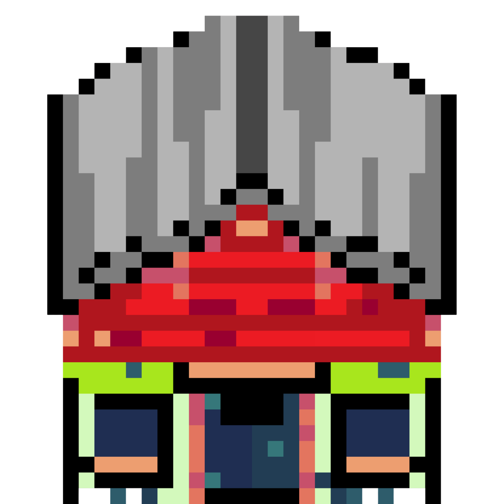
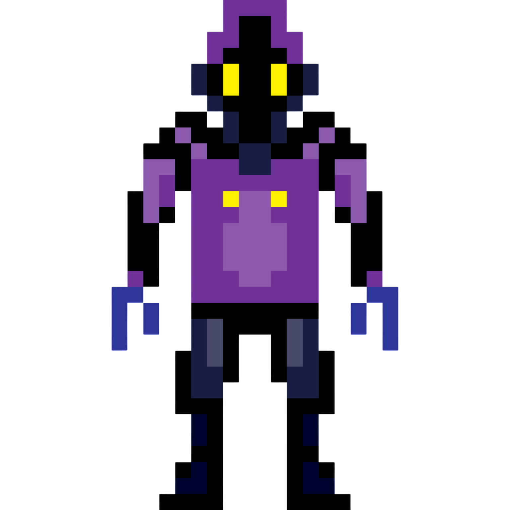
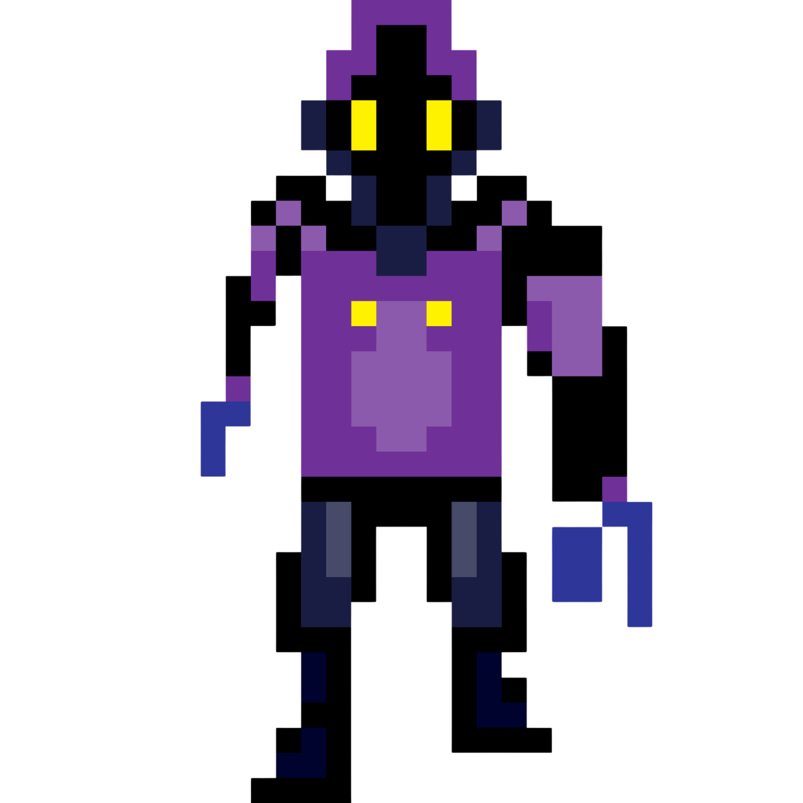
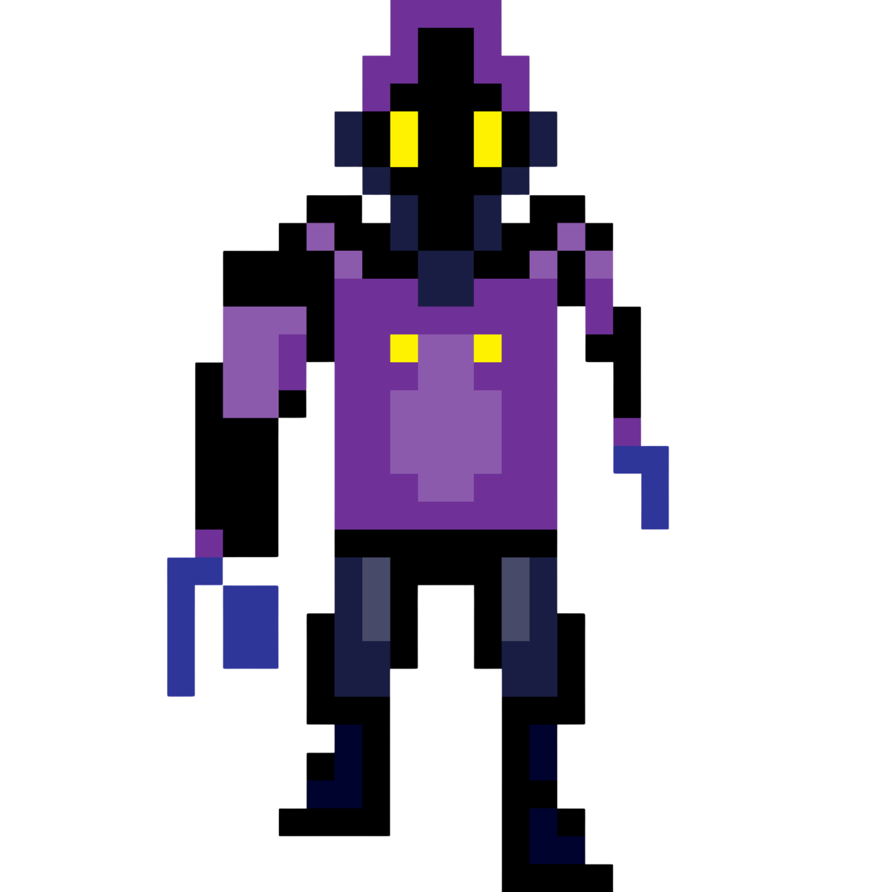
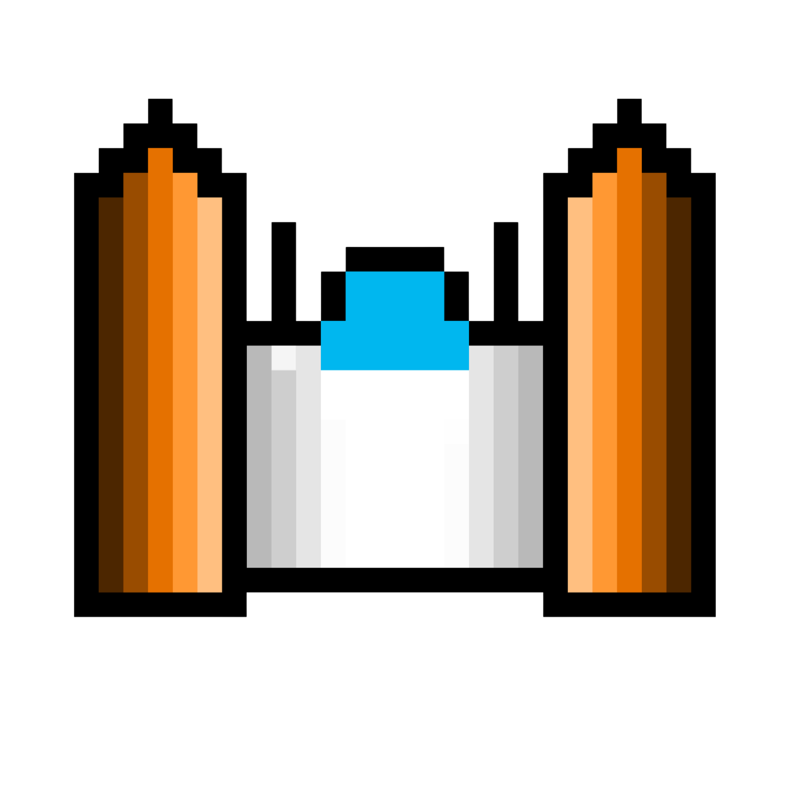

Starbound Frontier is a sci-fi adventure about humans, the Serions, and the fight to protect the planets. This page follows the real development process—from world-building and character art to the game itself.
Explore item and weapon artOptional extras such as guns or a money symbol.
Project setup
Accept the GitHub organization inviteProject collaboration setup.
Decide how the game will be builtHTML/CSS/JavaScript or a game engine is still to be decided.
Decide on release plansWebsite address and publishing options are still open.
This page shows the team’s planned priorities. It does not let visitors change the project status, and no completion percentage is claimed until the team confirms it.
Project details to decide
Answers from the team’s planning document are highlighted in bold.
Website URL
Possible address: starbound-frontier.github.io. Other options listed in the notes include sb-frontier.github.io and sb-f.github.io. The final URL still needs to be chosen.
Release date
Aiming for May 31st, but a confirmed date is still needed. The notes say quality should come before rushing and mention the last day of school as the deadline.
How will the game be coded?
HTML/JS/CSS or a game engine — not decided yet.
Accounts and storage
Will accounts be needed? If so, the notes say a privacy policy and local save would be needed.
How will code be shared?
The team is considering GitHub branches, OneDrive, or shared sessions.
Publishing experiments
The notes mention trying to publish on itch.io or a similar platform.
Inside the Starbound Frontier universe
A peek at the story and gameplay ideas in the current design notes.

Explore the frontier
Visit settlements, talk to citizens, meet quest givers, and discover places across different planets.
Travel between worlds
Spaceships and planet navigation are planned parts of the adventure.
Face Tantalus
Tantalus is a key antagonist whose belief in force over fairness helps drive the conflict.
Art & asset lab
Concepts and sprites from the project folder. These are works in progress.

Serion · Idle

Serion · Walk 1

Serion · Walk 2

Enemy spaceship
WHAT'S NEXT
Build, test, improve
The immediate focus is improving the lore, designing characters, and working out the title screen and project setup. The exact development method and publishing platform have not been finalized.
FOLLOW ALONG
This page will grow with the game
Come back for future progress updates, new art, and confirmed milestones. Nothing here promises a release date that the team hasn't chosen yet.